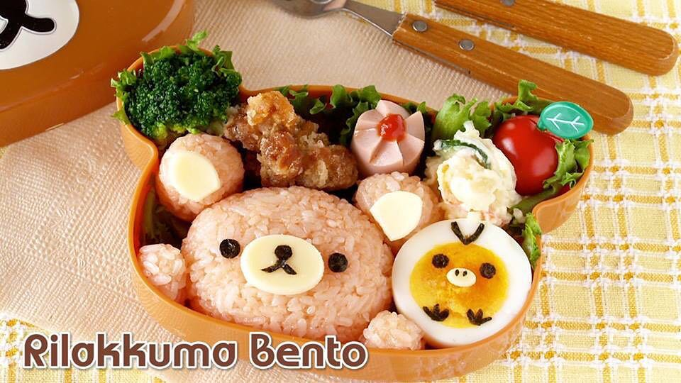

ochikeren's Rilakkuma Bento Recipe

Description
Rilakkuma is a fictional character (brown bear) made by San-X and Akira Kondo. Rilakkuma is a relaxed and lazy bear.
For character bentos, beginners are recommended to have "nori seaweed punchers" to help them create character bentos (kyarabens).
Ingredients
Rilakkuma
- Cooked Rice
- Ketchup (substitute: soy sauce)
- Salt
- Sliced cheese
- Seaweed
Kiiroitori (Yellow Bird)
- Boiled egg
- Sliced cheese
- Nori seaweed sheet
Plating (Optional)
- 2 lettuce pieces
- Potato salad
- Fried chicken
- Sausage
- Vegetables (broccoli, cherry tomatoes)
Steps
- Add ketchup to rice and mix it up until the desired colour is achieved. You can replace ketchup with soy sauce.
- Place a portion of rice onto a cling wrap and shape it into Rilakkuma's face. Do the same for Rilakkuma's ears.
- Line the bento box with 2 pieces of lettuce.
- Unwrap Rilakkuma's face and ears and place them in the bento box.
- Cut the boiled egg in half and place it in the bento box.
- Cut sliced cheese and seaweed into the appropriate shapes and sizes for Rilakkuma and Kiiroitori's features. Arrange them onto Rilakkuma and Kiiroitori.
- Add your preferred side dishes, such as potato salad, fried chicken, sausage, and vegetables to fill up space in the bento box.
Back to Recipes Homepage
Back to Top